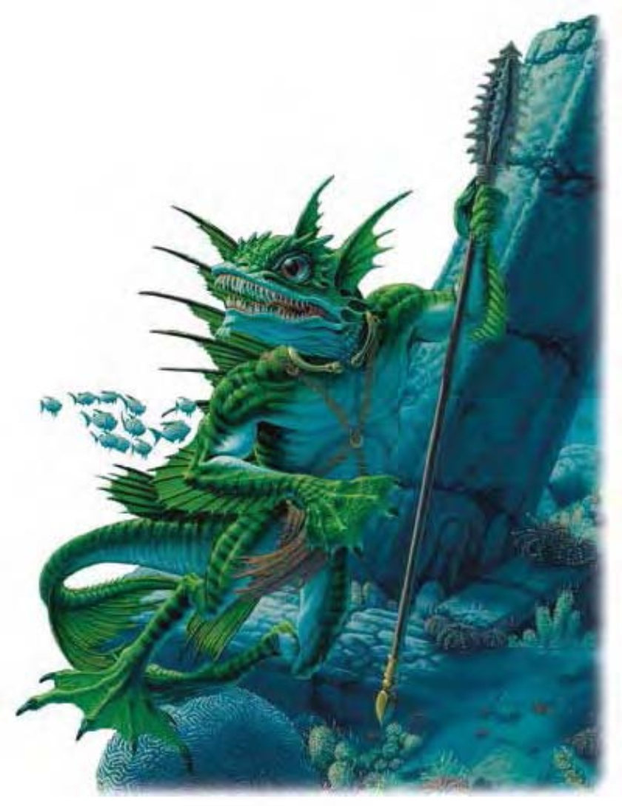

这种人形生物具有鳞皮、蹼足与尖牙。尾鳍弯曲，手上、背上与头上也都有鳍。睁着的一双大眼呈深黑色。
沙华鱼人是海栖的掠食者，十分擅于海中狩猎。他们又被称为海魔，会成群结队袭击沿海社群。
沙华鱼人多半天生绿色，背部色深，腹部色浅。许多鱼人还具有深色斑纹、环纹或斑点，但通常随着年龄渐淡。成年雄性高6英尺，重约200磅。
沙华鱼人与水生精灵互为天敌，永远不可能和平共存。两族之间连亘而血腥的战事有时还会妨碍到海运与贸易。对梭螺鱼人的痛恨则只次于水生精灵。
沙华鱼人有自己的语言：沙华语。拜高智力所赐，多数沙华鱼人都通晓两种额外语言，通常是通用语与水族语。
沙华鱼人是凶狠的战士，不求情也不容情。游泳时，沙华鱼人会使用勾爪或武器进行攻击，同时用脚抓伤对手。团队中几乎有半数鱼人会装备网子。
袭击地面居民时，他们会选择月黑风高的夜晚登陆，杀害居民与家畜作为食物。对付船只则采包围战登船，并留下一小股兵力在水中作为后援或解决被扔入海中的对手。
替代视觉 (特异)：沙华鱼人可以得知30英尺内的水中生物位置，但自己也必须身于水中。
血狂 (特异)：每天1次，沙华鱼人在战斗中若受到伤害，则该轮下一轮开始时就会陷入血狂状态，疯狂地用爪抓与啮咬进行攻击，直到自己或敌人死亡为止。陷入血狂中的沙华鱼人可得到力量+2、体质+2，以及AC-2的调整值。沙华鱼人无法自行结束血狂状态。
耙抓 (特异)：攻击加值+2近战、伤害1d4+1。沙华鱼人在游泳时作战还可获得两次耙抓攻击。
对淡水过敏 (特异)：全身浸在淡水里的沙华鱼人必须通过强韧检定 (DC=15)，否则会陷入疲乏状态。即使通过检定，只要继续待在淡水中，每10分钟都要再进行一次检定。
光照目盲 (特异)：突然曝露在强光下 (例如阳光或「昼明术」) 会让沙华鱼人目盲一轮。若仍停留在强光下，则后续每轮都会陷入目眩。
鲨鱼交谈 (特异)：沙华鱼人可用心灵与150英尺内的鲨鱼沟通，但只限于简单的概念，像是「食物」、「危险」与「敌人」。沙华鱼人可使用「驯养动物」技能与鲨鱼友好并进行训练。
栖水而生 (特异)：每2点体质可让沙华鱼人离水1小时，之后则采用《地下城主手册》第304页的溺水规则。
技能：沙华鱼人在进行任何特殊动作或闪身避祸时，「游泳」检定具有+8种族加值。即使分心或受困，他们在进行「游泳」检定时都可以随时取10。若以直线前进，则可在游泳时进行奔跑动作。
*沙华鱼人在水中进行「躲藏」、「聆听」与「侦察」检定时具有+4种族加值。
*沙华鱼人在离家50英里内进行「专业 (猎人)」与「生存」检定时具有+4种族加值。
*沙华鱼人在与鲨鱼共同工作时，进行「驯养动物」检定具有+4种族加值。
海魔的生活准则依循着数千年发展而来的仪式行为。沙华鱼人社群中的每个成员都知道自己的岗位职责，且尽忠职守。沙华鱼人对能够自给自足并严守社会规章感到自豪。但「为求生存必须得残忍铲除非沙华鱼人」的中心信仰，却成为其他种族的不幸。
沙华鱼人的居住地由石材或海底下的天然建材构成，社群大小不定，从乡村到城市都有。用以保护社群的的防御工事变化多端，有被动式的 (例如海藻伪装)，也有主动式的 (陷阱或驯鲨)。社群由年长的雄性精英团队 (尤其是四臂鱼人) 统治：族王统治乡村、亲王则统治约二十个乡村。鱼人王的领主则更大，王城居民约有六千以上。沙华王国通常涵盖了整条海岸线，村镇绵延约100英里。
沙华牧师的角色为巢中的教师与管理员，控制社群中的宗教生活。除了社群中的女司祭外，迷信的海魔们其实不太信任甚至畏惧魔法。
沙华鱼人的守护神�o为血寇来，一只巨大的魔鬼鲨鱼。
雄沙华鱼人的适合职业为巡林客，多数干部都是。多数的沙华巡林客选择将人形生物 (精灵) 视为宿敌。雌沙华鱼人的适合职业为牧师。沙华牧师崇敬的神是血寇来，可由下列领域择二：邪恶、秩序、力量或战争 (偏好武器：三叉矛)。
| 生命骰 | 2d8+2 (11HP) |
| 先攻 | +1 |
| 速度 | 30英尺 (6格)、游泳60英尺 |
| 防御等级 | 16 (+1敏捷、+5天生)、接触11、措手不及15 |
| 基本攻击/擒抱 | +2 / +4 |
| 攻击 | 勾爪+4近战 (1d4+2)；或三叉矛+4近战 (1d8+3)；或重型十字弓+3远程 (1d10/19-20) |
| 全力攻击 | 三叉矛+4近战 (1d8+3) 及啮咬+2近战 (1d4+1)；或2勾爪+4近战 (1d4+2) 及啮咬+2近战 (1d4+1)；或重型十字弓+3远程 (1d10/19-20) |
| 占据/触及 | 5英尺 / 5英尺 |
| 特殊攻击 | 血狂、耙抓1d4+1 |
| 特殊能力 | 盲感30英尺、黑暗视觉60英尺、对淡水过敏、光照目盲、与鲨交谈、栖水而生 |
| 豁免 | 强韧+3、反射+4、意志+4 |
| 属性 | 力量14、敏捷13、体质12、智力14、感知13、魅力9 |
| 技能 | 驯养动物+4*、躲藏+6*、聆听+6*、专业 (猎人) +1*、骑术+3、侦察+6*、生存+1* |
| 专长 | 强韧加强、多重攻击* |
| 环境 | 热暖带水域 |
| 组织 | 单独、成双、组队 (5-8)、巡逻队 (11-20，加上1个3级校尉及1-2只鲨鱼)、一团 (20-80，加上100%非战斗人员、1个3级校尉、每20个成年沙华鱼人1个4级团长及1-2只鲨鱼) 或一族 (70-160，加上100%非战斗人员、每20个成年沙华鱼人1个3级校尉、每40个成年沙华鱼人1个4级团长、9个4级卫士、1-4个3-6级女从祭、1个7级女司祭、1个6-8级族王及5-8只鲨鱼。) |
| 宝藏 | 标准 |
| 阵营 | 通常守序邪恶 |
| 进化 | 3-5HD (中型)；6-10HD (大型) 或视人物职业而定 |
| 等级修正值 | +2 (四臂则+3) |